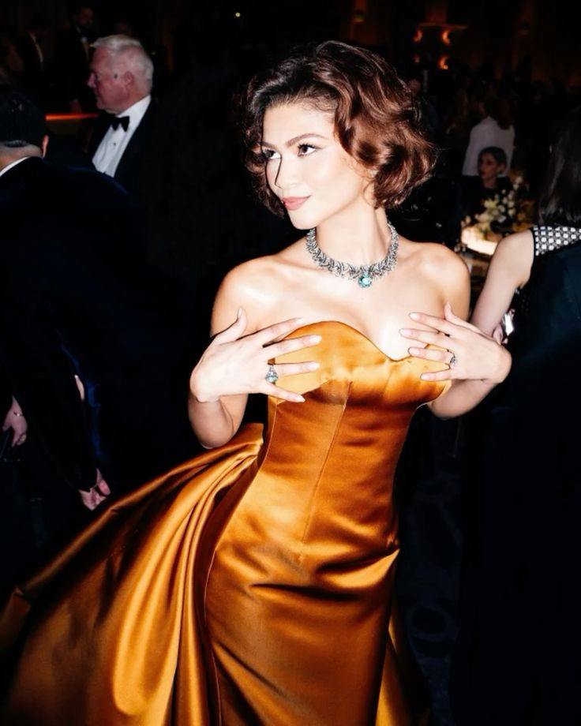

Nombre completo: Zendaya Maree Stoermer Coleman.
Nombre artistico: Zendaya.
Lugar de nacimiento: Oakland, California, Estados Unidos.
Profesion: actriz, cantante, modelo y productora.
Zendaya es una actriz y artista estadounidense que comenzo su carrera desde joven. Alcanzo popularidad con la serie de Disney Channel Shake It Up y posteriormente protagonizo K.C. Undercover. Con el paso de los años desarrollo una importante carrera en el cine y la television, destacandose por sus papeles en Spider-Man, Euphoria, Dune y Challengers. Tambien es reconocida por su influencia en la moda.
Sus comienzos
Zendaya nació y creció en Oakland, California. Desde pequeña estuvo relacionada con las artes escénicas, ya que pasó parte de su infancia en un teatro local donde trabajaba su madre. También realizó actividades relacionadas con el modelaje y la danza.
Su carrera como actriz comenzó en Disney Channel, donde alcanzó reconocimiento al interpretar a Rocky Blue en la serie Shake It Up!. Posteriormente protagonizó K.C. Undercover, serie en la que también participó como productora.
Su evolución
Con el paso de los años, Zendaya fue ampliando su carrera más allá de las producciones de Disney y comenzó a participar en importantes proyectos cinematográficos. En 2017 llegó al universo de Spider-Man con la película Spider-Man: Homecoming, y posteriormente participó en otras producciones como The Greatest Showman y Malcolm & Marie.
Uno de los momentos más importantes de su carrera llegó con Euphoria, donde interpreta a Rue Bennett. Por este papel recibió dos premios Emmy como mejor actriz protagonista en una serie dramática, en 2020 y 2022.
Después continuó creciendo en el cine con su participación como Chani en Dune y Dune: Part Two, y como Tashi Donaldson en Challengers. Además de actuar, ha participado en la producción de algunos de sus proyectos, mostrando una evolución hacia diferentes áreas de la industria del entretenimiento.
